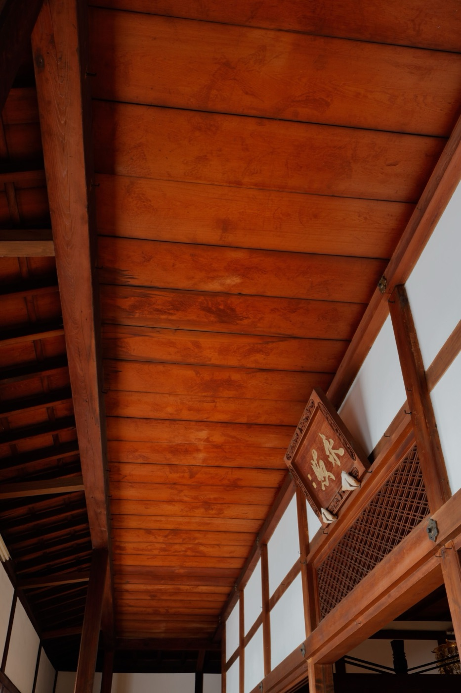

和美高中・115-1 走跳卡里善
策展
期末學習成果展現，以「人物誌」的形式來策展。
2026.10.12
本堂課的期末學習成果展現，是策展，
並且以「人物誌」的形式來策展。
因為這禮拜段考
今天只要：
- 做一個簡單作業
- 把前兩個禮拜的手冊寫完
第一段
為什麼要策展？
對自己來說
本堂課的目標是希望同學因為更認識家鄉，
所以對家鄉產生認同。
或者像我們剛開學的時候提過的
大學同學找你來彰化玩，
你不會一無所知。
對社區（家鄉）來說
我們希望可以藉由這門課長久的累積，策展的活動——
- 激發居民的討論
- 凝聚地方共識
- 形成社區意識
有了社區意識，居民更願意留下來努力，
朝向 SDGs 永續城鄉的發展。
第二段・問題
家鄉有什麼特色？
用策展找特色，
是不是「套套邏輯」？
用策展找特色是不是「套套邏輯」？
- 因為我們沒特色
- 用策展找特色
- 但是開學提過我們好像沒特色
- 找不到主題
- 我們沒辦法做出特色
- 又回到「因為我們沒特色」
其實
關鍵是說故事。

日本京都
有個地方有「血天井」。
- 1600 年伏見城之戰，守城的鳥居元忠與部下戰敗自刃
- 據傳染血的地板被拆下，改做成養源院、源光庵、宝泉院等寺院的天花板，用來供養
- 史料無法證實，但寺院與導覽一代一代講下去，成了觀光景點
其實是個很可怕，稱不上正面的事件，但是因為故事包裝得很好，所以變成觀光景點。
又或者
「新選組」的故事，
充滿暗殺與暴力，
但是也包裝、浪漫化……
大家可以自己詮釋，
變成文化資產的一部分。
陳思宏《鬼地方》
永靖人，寫有點破敗的家鄉，
家族既互相扶持但是也互相傷害的故事。
但是
仍然可以是個讓人想要
更了解永靖／彰化的例子。
吳念真・瑞芳大粗坑礦村
「為故鄉唸信的人」傳承的故事
- 國小三年級起，替村裡不識字的大人讀信、寫信
- 從原本替人寫信的「條春伯」接手：「知識不是用來牟利，知識是用來奉獻。」
- 後來當編劇、拍電影：「我一樣是在替別人寫信，只是寫給很多人看。」
吳念真口述〈感謝先生篇〉
Be A Giver 吳念真〈感謝先生篇〉完整版｜YouTube：youtube.com/watch?v=XDzxN1TLn0o
一封叫孩子寄錢回家的信
同一件事，怎麼說
媽媽的原話：「你跟那個囝仔說，厝裡沒錢，攏死了了……」
信上寫成：「你的孝順我們都看得到，家裡缺錢，如果你有，多少寄一點補貼。」
吳念真北科大演講，遠見雜誌 2013-06-13 整理
既呈現出過去生活不易，
也呈現出只要有人聚集的地方，
就會有些觸人的故事。
第三段
方向
不急著定義
我們不急著找到共識，
我們先挖掘更深入的
「和美、線西、伸港」的故事。
累積以後
自然而然就會看出意義，
與產生自己的詮釋。
方法
人物誌
Google Doc
今天作業
參考資源・想看的同學自行點擊